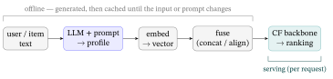

Appendix C — Generating Features with LLMs
1. The recipe in one place
The whole enhancer pipeline is four offline steps and one serving fact:
OFFLINE (run once, refresh on change):
for each user and item:
1. PROMPT an LLM with its raw text -> a short natural-language PROFILE
2. EMBED the profile string -> a semantic VECTOR
3. FUSE the vector into the CF backbone (concat as a feature, or align it)
SERVING (per request):
4. the trained backbone scores + ranks as usual — the LLM is NEVER called hereThe single most important property: the LLM runs offline, not at query time. You pay for it once per user/item (and again only when their text changes), so serving stays as cheap and fast as plain LightGCN — the enhancer bargain of LLM × RecSys §2.3. Everything below is how to do each step concretely and reliably.

2. Step 1 — the profile prompt
The job: turn an item’s (or user’s) raw text into a short, structured profile the rest of the pipeline can embed. Two rules make this reliable.
Ask for a short profile, not a long essay. A 1–2 sentence profile + a few tags embeds into a focused vector; a long generation dilutes the signal and costs more tokens. Item prompt:
System: You write concise taste profiles for a movie recommender.
User: Given the item below, write a two-sentence profile capturing its themes, mood,
and the kind of viewer who would love it. Then list 4 tags.
Item: "Titanic" (1997) — genres: Romance, Drama; a period romance set on the doomed liner.Demand structured output. Free text is a parsing hazard; ask for JSON (most APIs have a “JSON mode” / schema-constrained decoding that guarantees parseable output):
{"profile": "A sweeping period romance set against disaster, emotionally driven and
character-first, with broad mainstream appeal. Best for viewers who love grand,
tear-jerking love stories more than plot mechanics.",
"tags": ["romance", "period-drama", "tragedy", "mainstream"]}The user profile is the same move over the user’s history:
User: Here is a user's rated history. Write a two-sentence taste profile and 5 tags, as JSON.
History: Titanic (5), The Notebook (5), La La Land (4), Die Hard (2).→ {"profile": "Strongly prefers emotional, romance-driven films and musicals; lukewarm on action; values character and mood over spectacle.", "tags": ["romance","musical","drama","character-driven","low-action"]}
That is the entire creative step. The profile is deterministic-enough (set a low temperature) and cheap (a few hundred tokens), and — crucially — it exists even for an item with zero interactions, which is the cold-start payoff (From Graphs to LightGCN §14: a pure-CF model has no vector for an unseen node; its text gives it one).
3. Step 2 — profile → embedding
Encode each profile string into a fixed-length semantic vector with a frozen sentence-embedding model (which one is an Implementation Choices §2 question — a small, permissive embedder such as an e5 / BGE / Qwen-Embedding family model; \(\ell_2\)-normalize the output so dot product = cosine, as in Training and Serving a Recommender §7).
The vectors now place similar tastes near each other, which is the whole point. Illustration (2-D, normalized, romance-vs-action axes): Ann’s romance-leaning profile embeds near \([0.9,0.1]\), a second romance-lover Bob near \([0.8,0.2]\), an action fan Cara near \([0.2,0.9]\). Then \[ \cos(\text{Ann},\text{Bob})=\frac{(0.9)(0.8)+(0.1)(0.2)}{\lVert\cdot\rVert\lVert\cdot\rVert}=0.99, \qquad \cos(\text{Ann},\text{Cara})=0.32 . \] Ann and Bob land almost on top of each other from their text alone — even with no shared interactions — while the action fan is far. That is similarity a pure collaborative model could not see for a cold user.
These are semantic-space vectors, not the §5 MF factors. The embedding lives in the LLM encoder’s space, which is not the same as the backbone’s collaborative latent space. They must be aligned before they can help — which is step 3.
4. Step 3 — fuse the vector into the backbone
Two standard ways to put the semantic vector to work; pick by how much you want to change the backbone.
- Concatenate as a feature (simplest). Treat the semantic vector as extra input features alongside the ID — exactly the factorization-machine move of Traditional RecSys §8 (every feature gets to interact). No change to the CF model’s training objective; you just widen its input. Good first thing to try.
- Align by contrast (RLMRec). Keep the collaborative embedding \(\mathbf e_i\) and the semantic embedding \(\mathbf s_i\) as two views of the same node, and add a contrastive term that pulls them together (InfoNCE) on top of the BPR loss — the cross-view alignment decoded in SSL & Contrastive Learning §7 and LLM × RecSys §3. This shapes the collaborative space with semantics rather than just appending to it, and is the stronger (and more involved) option.
The decisive practical difference is what the serving path must carry — not whether the LLM runs (it never does at query time; both read cached vectors):
| Concat (early fusion) | Align (RLMRec) | |
|---|---|---|
| Training objective | unchanged — just a wider input | BPR loss + an InfoNCE align term (SSL §7) |
| Embedding dimension | grows to \(d + d'\) (the stacked \([\mathbf e_i;\mathbf s_i]\)) | unchanged (\(d\)) |
| Semantic vector \(\mathbf s_i\) at serving | needed — stored, and concatenated into every score | not needed — \(\mathbf e_i\) has absorbed it |
| Reach for it when | a quick win, or a feature-rich FM/CTR backbone | the SOTA enhancer; keep the serving model lean |
That last row is the crux: concat keeps the semantic vector in the loop forever (a wider input, an extra table to store and join at scoring), whereas align lets the contrastive term teach the collaborative space the semantics during training, so at query time you ship the same \(d\)-dim LightGCN with nothing extra on the serving path. That serving-side leanness is why align (RLMRec) is the modern default, and concat the quick first try.
Either way the win is the same: the backbone gains a semantic prior that is strongest exactly where collaborative signal is weakest — new and long-tail items (LLM × RecSys §5).
5. The harness — turning prompts into a pipeline
A single prompt in a notebook is a demo. Generating profiles for millions of users and items, reliably and affordably, is an orchestration problem — the “harness” around the LLM call. The pieces that matter:
- Versioned prompt templates. Keep the prompt in code as a parameterized, versioned template (not pasted strings). When you change the prompt, the profiles change — so the version is part of the cache key.
- Structured output + validation. Request JSON, then validate against a schema and retry on a parse/validation failure (with a stricter reminder). Never let an unparseable generation enter the feature store.
- Batching & concurrency. Profiles are independent, so process them in batches (many items per request where the API allows) and with bounded concurrency (a worker pool), not one blocking call at a time. This is where the wall-clock lives.
- Caching & idempotency. Hash each input (the item text + the prompt version) and cache the profile; regenerate only when the input or prompt changes. A catalog is mostly static, so the steady-state cost is near zero — you generate once.
- Cost & rate limits. Budget up front: (number of users + items) × (tokens per profile) × (price per token). Because it is offline and one-time, this is a batch cost you can schedule on cheap/off-peak capacity — not a per-request tax (the enhancer advantage, LLM × RecSys §2.3).
- An offline feature store. The output is a table:
id → (profile, vector, prompt_version, generated_at). The serving path reads vectors from this store and never calls the LLM; a scheduled job refreshes profiles for new or changed items.
generate_profiles(items, prompt_v):
for batch in chunks(items, size=B): # batching
todo = [x for x in batch if cache.miss(hash(x.text, prompt_v))] # idempotency
outs = llm.batch(render(prompt_v, todo), json_schema=PROFILE) # structured output
for x, out in zip(todo, outs):
if not valid(out): out = retry(x, prompt_v) # validate + retry
store.put(x.id, out.profile, embed(out.profile), prompt_v, now) # feature storeThat loop — batch, skip-cached, structured-call, validate, embed, store — is the difference between “I tried a prompt” and “I have a feature pipeline.”
6. Does the feature actually help?
Generating a profile is easy; proving it helps is the discipline. Two checks, both from Evaluation Metrics:
- Ablate. Train the backbone with and without the LLM feature on the same protocol (full-ranking NDCG@K / Recall@K, mean ± std over seeds, a significance test — Evaluation Metrics §11). The honest question is the delta, not the headline.
- Stratify by popularity. Report the gain on head vs. tail items separately (Evaluation Metrics §12.6). The semantic feature should help most on the cold tail; if the only lift is on the head, the profiles are adding little the collaborative signal didn’t already have.
A worked ablation. Train two identical backbones — same LightGCN, same dimension, same five seeds — differing only in whether the semantic feature is fused. Say NDCG@10 comes out:
- no feature: \(0.28,\,0.30,\,0.29,\,0.31,\,0.32\) \(\to\) mean \(\mathbf{0.300}\)
- + LLM feature: \(0.30,\,0.31,\,0.32,\,0.33,\,0.34\) \(\to\) mean \(\mathbf{0.320}\)
The headline gap is \(+0.020\) — but the honest test is paired, because the two runs share seeds: the per-seed deltas are \([+0.02,+0.01,+0.03,+0.02,+0.02]\), mean \(\bar d=0.020\), sample std \(0.00707\), so \(\text{SE}=0.00707/\sqrt5=0.00316\) and the paired-\(t\) (Evaluation Metrics §11d) is \(t=0.020/0.00316=6.3\) on \(4\) d.f., giving \(p=0.003\) — comfortably under \(0.05\). The feature really helps. Had the per-seed deltas straddled zero, the same test would have returned \(p>0.05\), and the honest report would be no significant gain — profile or not.
And the honest caveat from LLM × RecSys §2.3: a low-quality or poorly aligned profile can hurt. The pipeline is only as good as the profiles and the alignment — measure, don’t assume.
7. Where this leads — the density frontier
This appendix used one short profile per node. The open research question is how rich and how faithful that generated signal should be: longer multi-aspect profiles, several profiles per node, profiles distilled from reviews or knowledge, and how densely to generate them against cost — and, just as much, how to align that signal so it helps rather than drowns the collaborative structure. That density-and-alignment question is exactly the frontier LLM × RecSys §5 names as the most defensible LLM-for-RecSys contribution. The pipeline here is the on-ramp; how far to push its density and quality is live research.
8. Glossary
| Term | Plain meaning |
|---|---|
| Profile | A short LLM-written description of a user’s taste or an item’s character, used as input to an embedder. |
| Semantic embedding | A fixed-length vector encoding the meaning of the profile text (from a frozen sentence encoder), distinct from the CF latent space. |
| Enhancer pipeline | Using an LLM offline to manufacture features for a fast collaborative backbone that serves. |
| Structured output / JSON mode | Forcing the LLM to emit schema-valid JSON, so the result is reliably parseable. |
| Harness / orchestration | The engineering around the LLM call — templates, validation, batching, retries, caching, cost control. |
| Idempotency | Re-running the pipeline on unchanged input does no new work (hash → cache hit), so you generate each profile once. |
| Feature store | The table of generated id → (profile, vector) the serving path reads; the LLM is never on the serving path. |
| Alignment | Pulling a node’s semantic vector and collaborative vector together (contrastive, SSL & Contrastive Learning §7) so the two spaces agree. |
9. References & resources
Papers (the enhancer line — full citations in LLM × RecSys).
- Ren, X., et al. (2024). Representation learning with large language models for recommendation (RLMRec). WWW ’24. arXiv:2310.15950 — the LLM-writes-a-profile → embed → align recipe this appendix operationalizes.
- Xi, Y., et al. (2024). Towards open-world recommendation with knowledge augmentation from large language models (KAR). RecSys ’24. arXiv:2306.10933 — LLM-generated reasoning/knowledge fused through an adapter (the concatenate-as-feature fusion).
Tools (dated — see Implementation Choices for the current picks). Embedding models (§2: e5 / BGE / Qwen-Embedding families), vector stores and the normalize→inner-product trick (§3), and small permissive LLMs for offline feature generation (§4) all live in that appendix, with mid-2026 benchmarks and the license gate.
Online sources verified June 2026; treat all model names, prices, and API features as illustrative and re-verify before building.